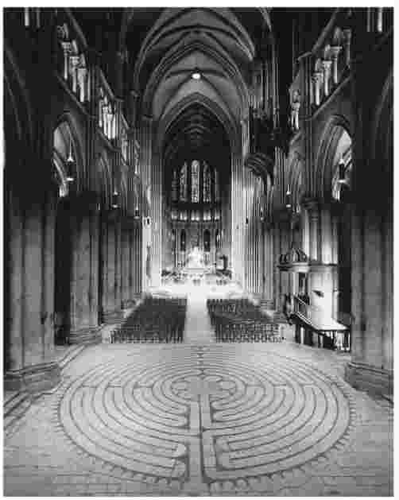
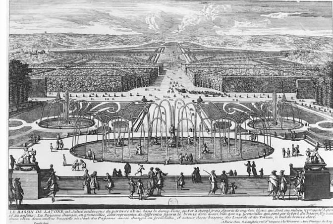
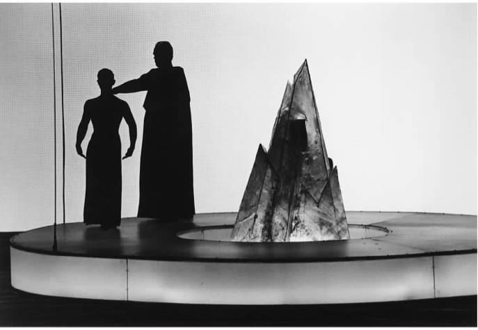
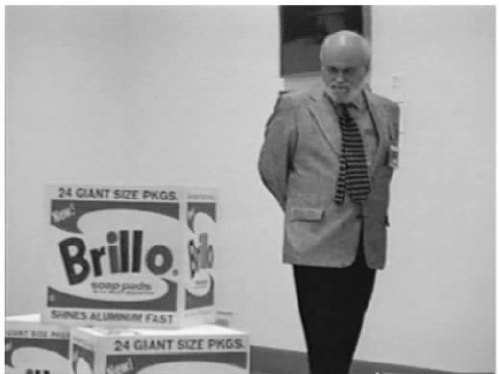

当代艺术家用鲜血、尿液、蛆和整形手术来创作作品，他们是过去那些以性、暴力和战争作为题材的艺术家的后继者。这类作品违背了我们在第一章讨论过的两种艺术理论，理由是它既没有加强公共宗教仪式中的团结，也没有促进对美感和有意味的形式等美学特征的保持一定距离的体验。那么，应该运用什么理论来应对如此难以解释的作品呢？
哲学家们通过阐述“艺术”是什么或者艺术应当是什么来思考完全不同的艺术作品。在本章我将引领大家完成一次穿越五个历史时期的虚拟艺术之旅，以此来展示在西方世界中艺术的各种形式和角色。我们将从公元前5世纪的希腊到中世纪的夏特尔大教堂，然后到整齐匀称的凡尔赛宫花园（1660—1715），再到理查德·瓦格纳的歌剧《帕西法尔》于1882年的初次演出。我们以考察安迪·沃霍尔的《波里洛盒子》并回顾近期的艺术理论作为结束，最后的时间为1964年。
讨论古代悲剧的时候总是要介绍在所有艺术理论中持续时间最长的一种理论——模仿论：艺术是一种对自然或人类生活和行为的模仿。古典悲剧作为为狄俄尼索斯这位掌管葡萄收成、舞蹈和饮酒的神而举办的春天庆典仪式的一部分，开始于公元前6世纪的希腊。在希腊神话中，狄俄尼索斯被提坦一次次撕开，但是他总能再生，就像春天的葡萄藤一样。悲剧重新演绎了狄俄尼索斯的死亡和重生，它包括了宗教的、市民的、政治的多层意义。
柏拉图（公元前427——前347）讨论了悲剧、雕塑、绘画、陶艺和建筑的艺术形式，他不是将它们当作“艺术”而是当作“技巧”或者技能性的手艺而讨论的。他认为它们都是“拟态”或者模仿。柏拉图批评包括悲剧在内的所有模仿艺术，因为它们不能描绘永恒理念的真实（“形式”或者“理念”）。它们仅仅提供对我们现实世界中事物的模仿，而这些事物本身就是对理念的模仿。悲剧使观众的价值观产生混乱，如果剧中的好人经历了悲剧性的衰败，那就是教育我们美德不总是会获得奖赏的。因此，在柏拉图著名的《理想国》的第五卷中，他建议将悲剧性的诗歌从理想国中排除出去。
亚里士多德（公元前384——前322）在他的《诗学》中为悲剧辩护，他争辩说，模仿是很自然的事情，人类从早期就开始喜欢模仿甚至从模仿中学习。他不相信有一个像柏拉图所说的与现世分离的、更高的理念王国存在。亚里士多德觉得悲剧能够诉诸人的意识、情感和感觉进而教育人。如果一部悲剧展示了好人面临灾祸，那么这部悲剧就通过观众产生的恐惧和怜悯之情达到对其心灵的净化或者“疏导”。希腊悲剧中最好的剧情再现了一位叫俄狄浦斯的人，他在不知情的情况下做了邪恶的事情，悲剧中塑造得最成功的人物都是高贵而非低贱的。亚里士多德的辩护对一些悲剧来说是很有益的，特别是对于他所喜欢的索福克勒斯的《俄狄浦斯王》。但是《诗学》将道德标准和审美标准混合在一起，这样就使亚里士多德不可能接受像欧里庇得斯的美狄亚这样的人物，她有意地杀害了自己的孩子。让我们来考察一下她的故事。
悲剧《美狄亚》是关于一位外地或者“野蛮”的女性背叛她的父亲和兄弟而帮助英勇的伊阿宋获得珍贵的金羊毛的故事。当她为伊阿宋生了两个孩子后，他又新娶了一位本地新娘，因为他的人民害怕作为外地人和女巫的美狄亚。美狄亚被激怒了，她通过最令人不安的方式来寻求复仇，杀死了他们的两个孩子。美狄亚还用毒袍杀死了伊阿宋的新娘，其可怕的结果被一位信使描写下来了：毒袍腐蚀了她的皮肤，甚至杀死了她可怜的老父亲，当时他冲过来进行救助但却被粘在她正在消溶的肉体上。
欧里庇得斯使观众的情感随着这些谋杀事件像坐过山车一样跌宕起伏，他描述了肯定会被柏拉图认为是不恰当的场景。这位戏剧家甚至要求我们同情美狄亚——别忘了，她还是亲手杀死自己孩子的罪人。的确，希腊人没有在舞台上展示恐怖的行为，但是欧里庇得斯的戏剧还是将其生动地用魔法唤起了，就像对毒袍的描绘或美狄亚和她的孩子告别的这几行：
亚里士多德批评了欧里庇得斯以美狄亚乘坐天上的战车逃走作为戏剧结尾的方式。也许亚里士多德也不同意将美狄亚处理成一个悲剧性的女英雄，因为他让一个好人故意选择恶行，这使剧情的格调降低了。欧里庇得斯将美狄亚塑造为一个让人同情或怜悯的对象是错误的 。这部戏没有满足悲剧应有的功能——尽管它具有很好的诗意或者很好的表演。
在古代的雅典，人们以某些方式对悲剧进行选择、资助和奖励，出席演出被当作全城宗教性节日活动的一部分，以此表示对狄俄尼索斯的崇敬。但是这些情况在《诗学》中都没有提到。亚里士多德没有明确讨论悲剧与市民、宗教相关的某些情况。因为他将悲剧艺术从其背景中抽离出来，所以他的戏剧理论能被（而且已经被）应用到其他时代的悲剧（如莎士比亚的悲剧）中。亚里士多德认为一位悲剧性的英雄是受“悲剧性的差错”（或错误）而非邪恶企图的影响而做出某些行为的，这一观点后来被转变为所谓的“悲剧性缺陷”的理论，这种理论被运用于描述哈姆雷特（优柔寡断）和奥赛罗（嫉妒）的弱点。这一传统对亚里士多德有一种误解，因为亚里士多德坚持认为一位悲剧性英雄的性格本身是没有缺陷的。亚里士多德认为，悲剧应该展示一位好心的英雄仅仅因为犯了一个错误（并非人类品德上的弱点）就导致了灾难性的结果。
希腊关于艺术即模仿的经典解释在悲剧之外的艺术理论领域也产生了影响。例如：著名的艺术史学家E.H.贡布里希就将西方艺术史（以绘画为主）描绘为一个为了更逼真地描绘现实而不断进步的过程。艺术的革新是为了与描绘对象更相像。文艺复兴中新透视理论的提出、油画在质感和色彩丰富性上的进步都使艺术家对自然的“复制”变得更加有信心。许多人还喜欢那种“看起来像”他们喜欢的场景或物品的艺术品。在看到布隆齐诺、康斯太勃尔的精美肖像以及荷兰静物画中流汁的柠檬和美味的龙虾时，人们不由得大为惊奇。
但是许多艺术方面的发展（或者“相反的情况”）已经使艺术的模仿论的合理性在上个世纪下降了。当时，绘画开始明显受到一种新媒体——摄影的写实性的挑战。从19世纪晚期开始，模仿已经越来越少成为印象派、表现主义、超现实主义、抽象主义等艺术流派的艺术目标。模仿论也没有鼓励现代人强调艺术家个人感觉和创造性眼光的价值。凡·高或者奥基夫画的鸢尾花让我们印象深刻是因为它们的精确模仿吗？柏拉图也许会批评这些现代艺术家只不过是创作了美的形象——无可救药地试图模仿不能言说之物或理念本身。但看起来那并不是他们的目的，我们是因为其他原因而看重凡·高和奥基夫所画的花卉的。
我们的虚拟考察之旅现在继续前行，到达1200年时欣欣向荣的法国中世纪城市夏特尔。在这里我们又将发现一种与城市宗教和市民生活相交织的艺术形式。夏特尔是宗教崇拜的一个中心和新兴的马利亚崇拜的一部分，马利亚崇拜开始为基督教注入了强有力的女性因素。夏特尔大教堂是在一场大火后于1194年重建的，里面有圣物，有一小片据说是从马利亚的束腰外衣上遗留下来的织物。教堂的拱顶完成于1222年，它真是一个令人吃惊的进步，特别是它几乎是当时法国唯一的拱顶。当类似的建筑在附近的亚眠、拉昂、兰斯、巴黎等其他城市还未修建好的时候，夏特尔大教堂的中殿在某个时期内是高度最高的。本地的地主和商业行会捐赠了大量财物来装饰大教堂最突出的、独一无二的染色玻璃窗。
大教堂是宗教审判、节日欢庆和礼拜的场所。人们在教堂内可以过夜，也可以把他们的狗带来，还可以举行行会会议或摆上小摊卖他们的商品，如宗教纪念品和年表——甚至卖酒（在那里可以逃税）。当社会和文化细节可以帮助我们理解大教堂某些方面的功能的时候，它也可以作为了解中世纪艺术观念的范例。哥特式建筑有一种特别的外观：突出的或者说尖状的角拱、肋拱、玫瑰花窗、塔楼以及高度惊人的中殿（中殿由飞扶壁支撑着）。夏特尔大教堂是早期哥特式风格的杰出典范，它还和八百年前大致相同，其中的1800座雕塑原作和182扇原来的染色玻璃花窗也有许多保存了下来。可以很清楚地看出，夏特尔大教堂的建筑师（简称为“夏特尔大师”）处于中世纪美学最新发展的顶峰。一个显著的事实就是在主门入口，像亚里士多德、毕达哥拉斯这样的异教哲学家的雕像被放在了几百位圣徒和使徒的雕像之中。这是为什么呢？
对于古希腊哲学家的研究对欧洲中世纪各种形式的文化生产都产生了深刻的影响。但丁（1265—1321）在他的《神曲》中对这些一流哲学家表达了敬意：书中说到维吉尔是引导但丁通过地狱的人，亚里士多德住在地狱的最高层，在摆脱了身体折磨的死后生活中，他正在与其他希腊作家进行讨论。在夏特尔著名的神学学校里，古典作者被当作“自由艺术”的一部分进行研究。柏拉图的哲学指导了夏特尔大教堂建筑师的审美观念。一位研究大教堂的历史学家竟然这样写道：“如果柏拉图的宇宙观没有反映在夏特尔大教堂的建筑上，哥特式艺术是不可能存在的……”
托马斯·阿奎那 [1] （1224—1274）真正使这一时代的美学理论研究大大推进了，他不是夏特尔神学学校的成员，亚里士多德对他的影响超过柏拉图，他本来应该在13世纪后半叶去巴黎一所新建的大学研究哲学的。阿奎那是第一位就美（以及其他论题）进行写作的重要基督教思想家，他的研究吸收了当时新近发现并被翻译出来的亚里士多德文本中的思想，这些思想在一个世纪前才通过伊斯兰文化被介绍到欧洲（尤其是西班牙）。
夏特尔和巴黎的中世纪哲学家没有对“艺术”进行过这样的理论研究，因为他们将注意力集中在上帝身上。阿奎那并没有像柏拉图和亚里士多德那样对“艺术即模仿”进行辩护。阿奎那总结道：如同善和统一一样，美也是上帝的一种本质或“超验”的属性。人类的艺术作品应该模仿和渴望获得上帝的绝妙属性。中世纪的人们要创造像大教堂那样的美，为此他们遵循三条基本原则：比例、光线 和寓言 。
夏特尔神学学校的学者们将比例的要求告诉大教堂的建造者，他们将源自罗马时期的思想家（如圣奥古斯丁）的理论进行提炼加工。大教堂的一般几何构造原封不动，增添了音乐般的和谐，这种影响可以追溯到柏拉图的《蒂迈欧篇》，其中具有创造性的造物主运用几何学规划了一个秩序井然的物质世界。基督教的上帝也被看作建造宇宙的建筑大师。严格的建筑规则被运用到入口、拱顶和窗户的设计以及被指定的拱顶和长廊的比例中。几何学控制了教堂本身的设计，教堂被建造成一个十字架的形状，两翼的比例符合一个人手臂的比例。在这种情况下，以雕像的形式将毕达哥拉斯这位几何学之父放在夏特尔大教堂中也就毫不出奇了。
夏特尔大教堂新的光线亮度和染色玻璃窗显示了中世纪美学的第二个原则。在早期，基督徒认为（神圣的）光和（世俗的）物质浮渣之间有着明显的区别。新柏拉图主义的《约翰福音》将基督解释为世界之光。因为一座哥特式的教堂是上帝的房子，光线成为了神性存在的可见证据。光线穿过漂亮的染色玻璃窗上的图形，熠熠生辉，传递着天堂的荣光。阿奎那也重视光线，他用明晰（claritas）这个术语来表示教堂内部的明亮和各种因素的设计。对他来说，神性存在于尘世事物的内部形式之中。一座大教堂就像一位善良美丽的人，应取得有机的统一和结构的明晰。视觉使我们欣赏到了像夏特尔大教堂这样的美丽事物中的明晰。
夏特尔大教堂的建筑师通过提高明亮度来证明上帝神圣的光辉。外墙由独一无二的两层或三层飞扶壁支撑，这样就能提高拱顶的高度。建筑师放弃了沿墙的楼座（阳台），这样就能使头顶的天窗能够建得更高更明亮。他还使玫瑰花窗发挥了更大的作用。教堂非同凡响的染色玻璃和雕像都在讲述故事，基督教的信仰者可以从中学习神学和《圣经》中所叙述的内容，由此将我们带到了中世纪美学的第三个原则：寓言。
哥特式教堂中的每一件东西都像一本意义丰富的书，大教堂过去被称为“石头的百科全书”。因为大教堂是上帝的房子，所以整个大教堂就是一部天堂的寓言。夏特尔大教堂的所有方面都有寓意：玫瑰花窗意指有秩序的宇宙，表示道德完善的正方形被用于设计教堂正面、塔楼、窗沿、内墙的各个部分甚至石头本身。

图4 从迷宫到尖拱顶高耸的中庭，再到奇妙的染色玻璃，夏特尔大教堂中的一切东西都暗示着天堂，同时也将信众引向上帝的王国。
对于阿奎那这样的一位中世纪哲学家来说，寓言合理地说明了上帝在这个世界上的存在方式。世上的每一件事物都能当作来自上帝的符号。在夏特尔大教堂的雕像和窗户中，人物或场景的位置展示了每一个故事和其他故事之间是如何关联的。大门入口在献给马利亚的雕像之下的圆柱上放置了毕达哥拉斯和亚里士多德的雕像，这显示出自由艺术（以及他们各自的几何学和修辞学研究领域）必须支持神学并被神学所控制。同样，一扇展示好心的撒马利亚人的染色玻璃窗与它下面描绘的《旧约》故事和上面描绘的耶稣都有关联，它们严格按照从下到上、从左到右的观看顺序排列。跟所有窗户及其局部的制作一样，所有组塑雕像和大门的尺寸、排列和相互关系都服从于统领大教堂其他部分的比例规则。
从建筑设计到泥瓦匠、木雕匠、石匠、彩窗绘制工等工种，夏特尔大教堂展示了一系列具有艺术性的专业技术。能力出色的人在这里工作，也许他们获得了很高的报酬和广泛的承认，但是他们最终将自己的个人努力献给了教堂的整体宗教目标。夏特尔大教堂整体合作的结果是形成了满足哥特式美学三原则（比例、光线和寓言）的整体性和谐。
如今，一位到法国旅游的游客可以在某一天从巴黎坐火车到具有中世纪风貌的夏特尔做一次短程参观，第二天就可以参观凡尔赛宫。完成这次旅行后，有人逼我说出哪个地方更加令人印象深刻。夏特尔是令人着迷的，你会发觉大教堂的塔楼与城市狭窄的中世纪街道不相协调的独特景象。相比而言，凡尔赛宫以纯粹的规模和景观让人目眩，这座宫殿坐落在园林、喷泉、水道和花园中，显得非同凡响。这些花园也是我下面想要集中讨论的对象。
在17至18世纪的时候，花园被当作高雅的艺术成就。在1770年，霍勒斯·沃波尔 [2] 将园艺和诗歌、绘画一起列为“优雅三姐妹”。像“能人”布朗这样的设计师或者“园艺大师”在英国获得了名声和财富。安德烈·勒诺特来自一个园艺世家，他被国王路易十四征召去设计一个花园，这个花园的壮观足以匹配他“太阳王”的形象。勒诺特设计这些宏伟的凡尔赛宫花园耗费了他生命的五十年时光（开始于17世纪60年代）。
凡尔赛宫的花园围绕着太阳神阿波罗这一主题（为了向路易致敬）而设计，与希腊神话关系密切，花园中的喷泉和雕塑刻画了阿波罗的母亲拉托那、姐姐狄安娜等人物。花园规模巨大，从一个有沼泽的狩猎行宫开始兴建，投入了大量的财力和劳力来改造花园的景观。凡尔赛宫的官方网站上说：整个花园占地2000英亩，其中有20万棵树，21万株花木，50座喷泉，620个喷水嘴，在每年“喷泉全开”的时候每小时消耗3600立方米水。水和树木、植物一样都是原始设计的一部分，喷泉和水道进行了专门设计，可调节的喷嘴可以制造出水流从雕塑上泼洒下来的效果。当乐师在岸边演奏的时候，凤尾船的船夫和穿制服的水手经常被雇来在大运河里进行水上表演。
凡尔赛宫景观中无处不在的古典文化典故需要有教养的观众去欣赏。在君主专制时期，像城堡一样，花园也要发挥一定的社会、政治和文化功能。花园体现了国王的统治，开阔的景观暗示国王的所有权向眼睛所能看见的地方（甚至眼睛看不到的地方）延伸。但是在花园以复杂的几何学原理安排的规划中也有一种美感原则在起作用，宽阔的道路、充满装饰性设计的低矮的花园或花圃、长达一英里的大运河、附加的木制小凉亭或者丛林，每一处景观都有自己的主题并因设置的喷泉而增色。（在下一章，我们将看到一座佛教禅院在风格上是如何不同，它强调的是与自然的和谐而不是对于自然的所有权。）

图5 早期由贝兰尔制作的雕版画显示了康德可能看到过的凡尔赛宫的景象，作者着重描绘了莱透纳喷泉的水戏以及皇家大道两边的景观。
康德没有把花园当作最高雅的艺术形式，但是他很认真地对待它们。康德重要的美学著作《判断力批判》是在勒诺特开始他的工作后一个世纪出版的。尽管康德可能看过凡尔赛宫景观的雕版印刷品，或者知道有像汉诺威的海恩豪森王宫花园（这是哲学家莱布尼兹讨论过的景观）那样对其进行模仿的花园，但他从来没有到过凡尔赛宫。要记住，康德是强调形式特征和“无目的的合目的性”的。凡尔赛宫作为一个以美为目的的花园，并没有满足种植水果和蔬菜的低层次目的。康德将园艺家看作那些“按形式来作画”的人，将花园列入了精美美术品的类别之中。
康德承认“景观园艺可能被认为是一种绘画，这看起来似乎很奇怪”，但是他随后解释说这种艺术能符合他“想象力的自由游戏”的标准。
康德没有将花园作为社会地位、教育特权或者我们人类与上帝和自然之间关系的代表来考察。相反，他强调杰出的形式能创造出一种机能的和谐 ，这种和谐使我们认为花园是美的 。康德也许称赞过凡尔赛宫有秩序感但又不是过分规矩和寻常的东西。人们走进小树林或者灌木丛，会对每一处全新的安排感到吃惊。另一个令人惊奇之处表现在花园按照不同但“恰当”的原则来安排这些植物、雕像、花瓶和喷泉的并置关系。康德批评英国的花园更“自然”的风格，认为它们“将自由想象力推向了怪诞的边缘”。凡尔赛宫持续变化的景观、没有特别目的的表面秩序，特别是姿态各异的喷泉所引发的感觉活动，所有这些都使其显得很美，这些东西都能刺激“想象力的自由游戏”。
康德经常说到自然之美并赞扬一朵花或一只嘤嘤歌唱的鸟具有“自由之美”。他改变了对待美的传统方式，将对于崇高的描述加入其中。这些具有崇高美的事物包括：巨石、雷雨云、火山和很高的瀑布或者像埃及的金字塔、罗马的圣彼得教堂（这里又涉及了康德从来没有去过的地方）这样规模巨大的艺术作品。康德对于崇高美的处理为新的风景画种类和华兹华斯、拜伦、雪莱这样的浪漫主义诗人的出现铺平了道路，对他们来说，自然将提供创作灵感和基本的背景，而不是勒诺特在凡尔赛宫所展示的那种秩序、顺从和享乐。
我接下来要讨论两位艺术家——理查德·瓦格纳（1813—1883）和安迪·沃霍尔（1928—1987），他们是推崇艺术家个性的代表人物。瓦格纳由于跌宕起伏的爱情生活、狂热的崇拜者、逃离丑闻和债务、国际名声等因素而将其传奇式天才的角色演绎得淋漓尽致。在获得巴伐利亚国王路德维希二世的资助后，瓦格纳在拜罗伊特建立了家庭和剧院，这里今天仍旧是瓦格纳的崇拜者朝圣的地方（参观票预订单已排到七年之后）。我将考察每一位艺术家的一个具有例证性的作品：瓦格纳的最后（有人认为是最伟大的）一部歌剧《帕西法尔》以及沃霍尔创作于1964年的早期代表作《波里洛盒子》。
瓦格纳的音乐天才是毫无争议的。评论家惊奇地发现他能处理那些充满雄心壮志的歌剧中的几百种音乐主题。他以结构丰富、微妙、深刻的配乐将一种新的戏剧性因素引入管弦乐的作曲法中。他的音乐对演唱者提出了可怕的挑战并需要他们具有很强的毅力和巨大的力气。他将歌剧看作一种艺术综合体，一种不仅要控制音乐特性还要控制唱词、表演、服装和舞台布景的完整艺术形式。他在需时十八小时的多幕歌剧《尼伯龙根的指环》中发展了一种叙事方式来详述那些具有神话色彩的故事，剧中包括有莱茵河少女、神灵、侏儒、瓦尔基里（北欧神话中奥丁神的婢女之一）、龙、飞马、彩虹等。瓦格纳的影响已经辗转影响到相关的艺术形式，如电影作曲。他使用与特殊主题或人物相关的主乐调 来制造戏剧效果，在约翰·威廉姆斯为电影《星球大战》所作的电影音乐中这一点也得到了再现。
瓦格纳的歌剧《帕西法尔》是一个赞美受难的民间传说。我们跟随一位年轻骑士，他是一位“由于怜悯而变得智慧的纯洁的愚者”。批评家对这部歌剧既爱又恨，有人认为它表现了崇高，有人认为它表现了颓废。这部五个小时的歌剧讲述了在使圣矛和圣杯重新结合的过程中经受诱惑和不再单纯的伟大故事。从女巫昆德丽跌宕的尖声独唱到花神的充满诱惑的歌曲，这部歌剧尝试了各种音乐情感的表达。音乐在最后一幕变得光芒四射，时间安排在耶稣受难日，象征着精神性的转变。帕西法尔现在成为了圣杯骑士，他以圣矛接触国王，治好了国王的伤。歌剧最后提到了“对救赎者的救赎”。
哲学家弗里德里希·尼采 [3] （1844—1900）是《帕西法尔》最激烈的批评者之一，他以前是瓦格纳歌剧的爱好者，曾经和作曲家李斯特、柴可夫斯基以及许多君主和贵族一起观看了瓦格纳1876年首次上演的盛大歌剧《尼伯龙根的指环》。尼采于1868年遇见瓦格纳，两人成为了朋友。尼采的著作《悲剧的诞生》（1872）就是献给瓦格纳的，他在书中热情洋溢地谈到了悲剧的重生，每个人都知道它与这位作曲家有关。尼采是一位文献学家和年轻教授，他从对狄俄尼索斯的崇拜开始描述悲剧的起源。悲剧的景象展示了每一种生命的本质都是暴力和受难，没有意义和正当理由。悲剧中“阿波罗艺术”的诗意之美形成了一层面纱，透过它我们容忍了狄俄尼索斯可怕但迷人的见识，这部分是特地通过音乐和各部分的和谐而传达的。就像在希腊的悲剧中一样，在瓦格纳的歌剧中，受难被展示，人们纵情于其中，瓦格纳令人惊奇且常常是不和谐的音乐再现了狄俄尼索斯的生命力。尼采悲叹德国“单纯而有力的核心”被“外来因素”所削弱，他赞扬瓦格纳使用雅利安人的而非闪米特人 [4] 的神话重新发现了古代北欧日耳曼人和条顿人神话的最初根源，从而使德国乃至欧洲的文化得到了新生。

图6 休斯敦大剧院上演的瓦格纳的歌剧《帕西法尔》，在罗伯特·威尔逊设计的引起争议的舞台上，国王安福塔斯和年轻的帕西法尔站在圣杯旁边。
但是尼采于1888年出版了《瓦格纳事件》，他在书中严厉指责了《帕西法尔》和它的作曲家。为什么会发生这种转变呢？尼采发现《帕西法尔》的音乐很棒，他赞扬了音乐的透明、“精确”以及“在心理上的深刻理解”，他甚至称赞它“崇高”。然而，由于《帕西法尔》带有献身的救世主和救赎主题，尼采认为它过分“表现了基督教的精神”，他说：“瓦格纳……在基督十字架前，显得消沉、无助、心碎”，“充满着腐朽、绝望和颓废”。尼采发现这部歌剧的剧情不是充满对生命的肯定，而是“病态的”和否定生命的——这不是真正的狄俄尼索斯的精神。尼采具有良好的音乐修养，他觉得《帕西法尔》纯粹追求美感，诱惑观众服从于作曲家的创作目的，而这只能把一切弄得更糟糕。当尼采嘲讽拜罗伊特的观众对瓦格纳的大肆阿谀时，听起来就像是柏拉图警告人们警惕悲剧的诱惑力一样。
一些现代人在解说瓦格纳的时候会产生一种相似的正反感情并存的感受：他们也许会赞赏瓦格纳音乐的优美和复杂性，他们也发现瓦格纳所编的“雅利安人”的神话有令人反感的方面。瓦格纳狂热的反闪米特人的作品被他的崇拜者希特勒阅读之后，他的歌剧事实上成了纳粹的国乐。这使得他的音乐在不久以前被以色列禁止上演，虽然不是明令禁止。即使没有这一层担心，一些人还是会讥讽瓦格纳宏大的主题、剧情和剧中塑造的那些以自我为中心的角色，如《崔斯坦和依索德》中那段冗长的、长达四十分钟的爱情二重唱。我们不必接受尼采的批评观点，不必不顾宗教和政治因素而将《帕西法尔》视为一部自命不凡、又臭又长的作品。不仅对尼采，对许多人来说，在评价瓦格纳的歌剧时，审美和道德关怀会产生冲突，影响对于瓦格纳歌剧的评价。
安迪·沃霍尔是一位自我推销专家，他有着精心打理过的形象：银白色的头发、低沉的嗓音、深黑的眼睛。因为对名人着迷，沃霍尔喜欢乘飞机旅行和参加聚会。然而他却说：“我认为如果每个人都一样，那将会很可怕。”他创造了那句具有嘲讽意味的口号：“每个人都有十五分钟的出名机会。”沃霍尔在20世纪60年代的“波普艺术”运动中崭露头角，波普艺术运动与时尚、流行文化和政治密切相关。沃霍尔将注意力投向我们周围环境中的日常视觉产品，他声称自己要“像机器一样画画”。他取得了非凡的成功，留下了价值上亿美元的财产。
为了避免使人们觉得沃霍尔不够重要，我们应当回顾他那些让人警醒的灾难性画面中的形象：民权暴乱中攻击人的狗、电椅、可怕的汽车车祸，这些都被转变为（就像他创作的玛丽莲·梦露一样）色彩明亮的丝网版画。沃霍尔不被条条框框所约束。他一直保持着虔诚的基督教信仰，在意大利完成的《最后的晚餐》系列（以莱昂纳多的“原作”为基础）被赋予了严肃的意义。
沃霍尔促使充满雄性气质的纽约抽象表现主义在性取向上向后现代主义的游戏态度转变。当沃霍尔1964年在纽约的斯塔贝勒画廊展出一堆用手工刻模印制的夹板做的木盒子时，他已经成为一位成功的商业性的艺术家。这些盒子对于哲学家阿瑟·丹托产生了重要影响，他对它们进行过反复讨论（他甚至写过一本标题为《超越波里洛盒子》的书）。沃霍尔的“波里洛盒子”看起来和超市里看到的一样，丹托感到这一点很让人费解：
关于这个谜团，丹托写了一篇广受争议的文章——《艺术世界》。后来，他的文章激发哲学家乔治·迪基提出了“艺术的惯例理论”，根据这一理论，艺术是“任何人造物品……它已经被授予一种身份，可以被某个人或者代表某一社会机构（艺术世界）的人所欣赏”。这意味着像“波里洛盒子”这样的物品如果被博物馆或者画廊的负责人接受或者被收藏家购买，那么它就已经被命名为“艺术”了。

图7 哲学家阿瑟·丹托正在思考为什么安迪·沃霍尔堆在一起的《波里洛盒子》是艺术。
但是，丹托不同意这种说法，因为《波里洛盒子》并没有 马上就被“艺术世界”所接受。当关于这些盒子的运输问题引起争端的时候，加拿大国家画廊的负责人与海关检查官员意见一致，都不认为这是艺术，也几乎没有人购买它们。丹托为此争辩道：艺术家展出某种作为艺术的东西，艺术世界应该为他提供一种背景性的理论。这种相应的“理论”不是艺术家头脑中的一种思想，而是社会和文化背景中某些可以让艺术家和观众都能把握的东西。沃霍尔的创作形态在古希腊、中世纪的夏特尔或19世纪的德国是不可能成为艺术的。沃霍尔通过《波里洛盒子》证明了：如果给予适当的环境和理论支持，任何东西都能成为一件艺术作品。因此，丹托总结道：一件艺术品是体现一定意义的物品，“如果没有一种阐释将它如此这般组织起来，任何东西都不能成为艺术品”。
丹托批评了早期的艺术观点（比如我们在本章中已经讨论过的那些理论）：
丹托本人试图避开对任何特殊类型艺术的认可。他的多元理论有助于解释为什么今天的艺术世界能将泼血的仪式、死鲨鱼以及外科整形等这么多的类型接受为艺术。他明白他的工作就是去描述和解释为什么在不同的时代人们会将不同的事物当作艺术：他们对艺术做出了不同的理论概括。在我们所处的时代，至少从杜尚的一些作品和安迪·沃霍尔的《波里洛盒子》开始，几乎所有创作都被如此对待。这使得那些用美、形式等术语来限定艺术的早期哲学家的狭隘、有局限的观点看起来很死板。即使像塞拉诺的《尿浸基督》这样令人震惊的作品今天都能被认为是艺术，这是因为一个对象背后有合适的观念和阐释来支持。塞拉诺和他的观众共同享有一些背景性理论或者说背景资料，在这种文化理论背景下，他的摄影作品能被看成艺术，因为它通过一定的物质媒介传达着思想和感情。
丹托辩解道，在每一个时代和背景中，艺术家依靠一种观众能理解和接受的艺术理论创造了一些被称作艺术的东西并赋予这些作品历史和艺术惯例的背景。艺术不必一定是一部戏剧、一幅画、一座花园、一座庙宇、一座大教堂或者一部歌剧。它不一定要是美的、合乎道德的，也不必显示个人天才或者通过光亮感、几何和寓言来表示对神的信仰。
丹托开放的艺术理论接纳所有的作品和信息，但是它没有很好地解释一件艺术作品怎样 传达它的信息。作为《国家》杂志的艺术批评家，他必须设想一些作品的信息比其他作品的信息传达得更好一些。（说某些东西是艺术并不等于说它是好的 艺术。）丹托以一位批评家而不是一位哲学家的身份进行写作，他常常赞扬一些东西，也常常发现一些东西的缺陷。他就此解释道：“批评家的任务是辨别作品的意义，解释它们显现的模式。”这需要对艺术作品的物质材料和形式特征都进行考虑，例如欧里庇得斯的诗化语言、勒诺特设计的喷泉中水的作用、夏特尔大教堂的高度和光线、瓦格纳对和声的改进和配器——丹托甚至注意到了沃霍尔的木盒子做工很好。许多细节都与艺术家在艺术作品中如何呈现他们的观念有关。我想更进一步考察艺术的意义和价值的问题。但首先还是让我们游历更多的地方，这次要绕行全球去考察那些非西方国家的艺术范例。